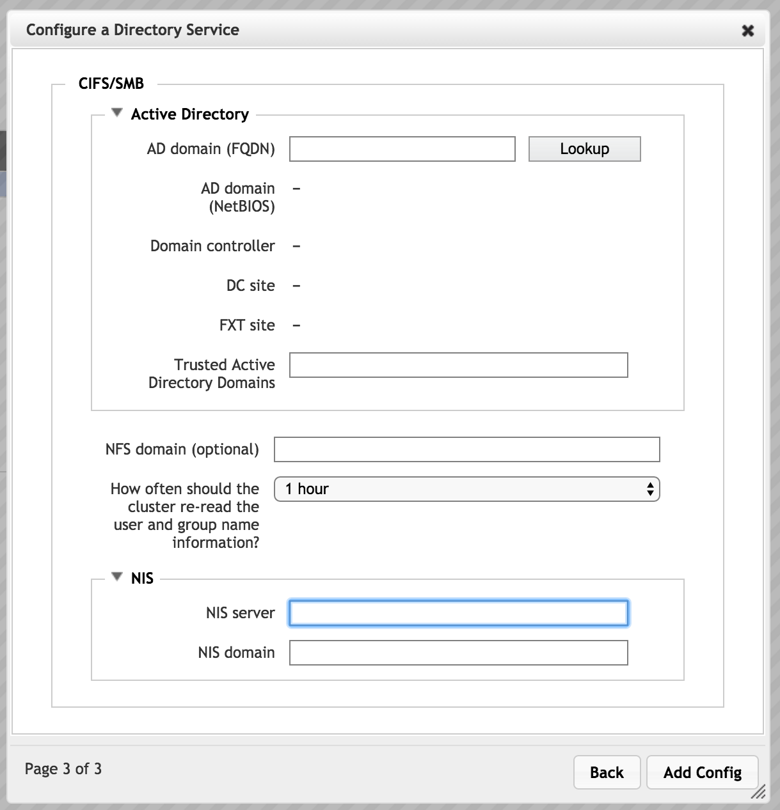
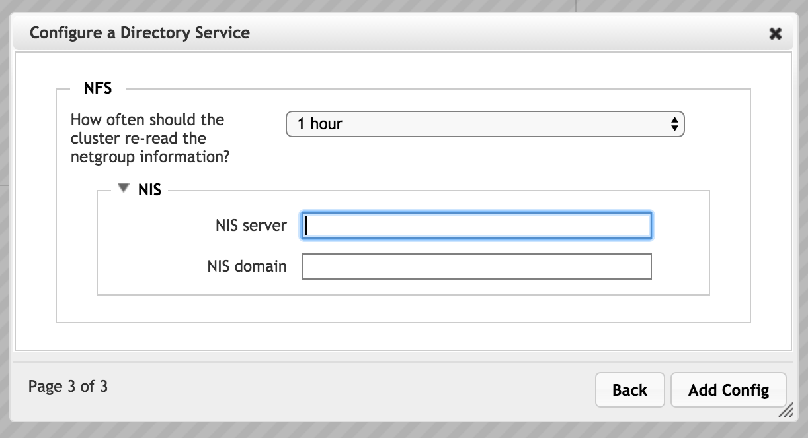
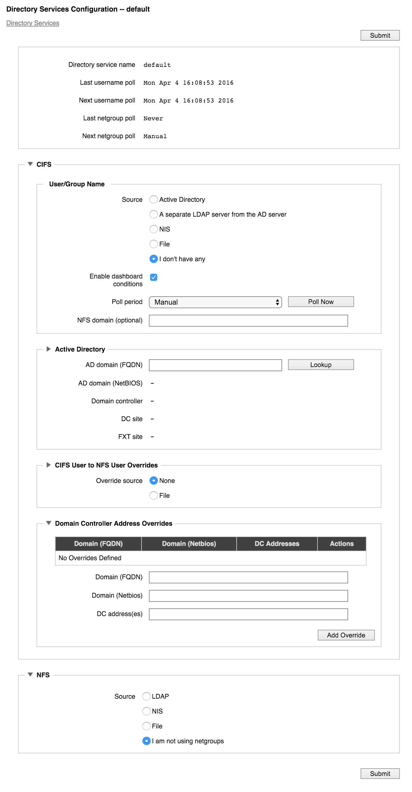
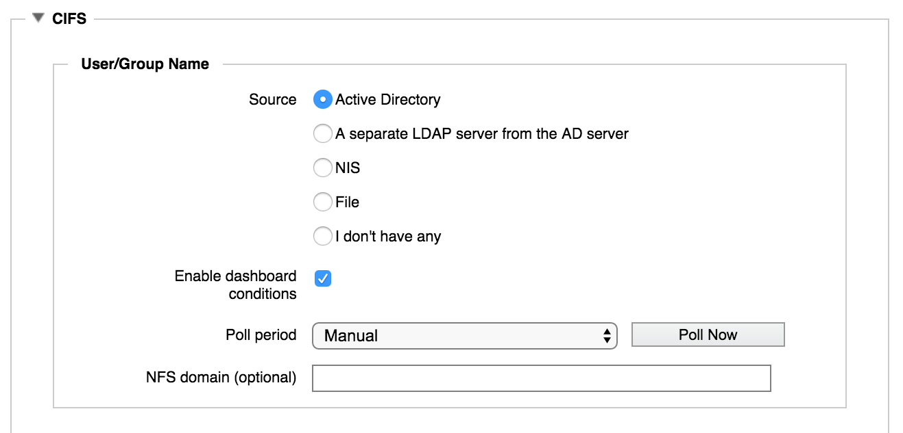
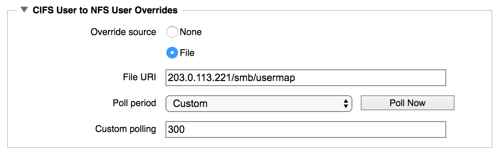

Cluster > Directory Services

Use the Directory Services settings page to specify where to read user and group information. These services are used to populate user and group information tables in the Avere OS system that are used to authenticate users for access control.
Note
The settings on this page are used for client requests to the cluster and back-end core filers. Do not confuse this cluster directory services configuration with the cluster administrative login settings, which also can be managed by an LDAP or AD server. Read Using the Avere Control Panel and the Administration > Users and Administration > Login Services page documentation to learn more.
The cluster comes with one configuration, named default. You cannot rename the default configuration, but you can customize it with your directory services settings.
There are two methods for editing the default configuration:
Configuration Wizard (Modify button) - A step-by-step process guides you through setting up directory services for SMB users, NFS users, or both. The configuration wizard can be especially helpful when you need to create the initial configuration for a new cluster. Open the configuration wizard by checking the box in the Actions column and clicking Modify.
Configuration details page (link from configuration name) - The details page shows all settings in the current configuration, and allows you to change them. It also gives information about the most recent poll.
Open the configuration details page by clicking the configuration name (default).
Choosing a Download Source
If your user and group information (RFC 2307 attributes) are stored in an Active Directory server, you should choose AD as your cluster’s download source. AD integrates well with Kerberos and provides smoother access to trusted domains. It also avoids using the LDAP-style uid attribute, and automatically differentiates identical usernames from different domains.
Using LDAP to download RFC 2307 attributes is most useful in cases where user and group IDs are shared across domains. That is, a particular username represents the same entity in all domains that access the cluster.
Using the Configuration Wizard
Check the Actions column checkbox and click the Modify button to open the configuration wizard.

In the first page, select which types of users will access the system.
- The CIFS option lets you configure SMB, which allows users from Microsoft Windows clients to access the cluster.
- The NFS option lets you configure settings to allow access from clients on Unix-style filesystems.
Select both options to configure access for all supported types of clients.
If you choose both SMB and NFS, the wizard shows settings for each type of access on subsequent pages. The settings appear in individual panels, with SMB at the top of the page and NFS at the bottom of the page.
{kind=link}
Configuration wizard page two for both SMB and NFS clients
Configuration settings for SMB and for NFS are described separately in the next two sections of this document.
Configuration Wizard Settings - SMB
If SMB is selected on the first page, the directory services configuration wizard includes these options in pages two and three.
Note that additional SMB-related settings are defined in the VServer settings pages, specifically in the CIFS and CIFS Shares pages. (The CIFS page includes the control that enables SMB for the cluster.) Read Configuring SMB Access to learn more.
Also, if you need to map Windows usernames to NFS usernames, you must add the username mapping information on the The Directory Services Configuration Details Page page after completing the steps in the wizard. The SMB/NFS Username Mapping setting does not appear in the wizard.
Username Source for SMB
The second page of the directory services wizard asks you to choose the type of service. This setting determines how the system gets username and group names for SMB clients.
Note that an Active Directory (AD) server is required for SMB access. Even if you use a different source for the username and group name information, you must configure an AD server in the next page of the wizard.

Choose one of the listed options to set the source for SMB user and group names.
Important
Choose the source that has the most complete set of user and group names on your system. If your cluster accepts client requests from both Windows and Unix style clients, you might need to manually import Windows usernames from the AD server into an LDAP server, or import the set of Unix usernames into the AD server’s records. Typically, an AD server includes Windows client information only.
- Active Directory - If Active Directory is selected, the system will use the AD server to look up usernames and groups. AD server information is entered in the next page of the wizard.
- LDAP Server - Select A separate LDAP server from the AD server to import user and group information from an LDAP server that is not used as the cluster’s active directory server. LDAP server information is configured in the next page of the wizard.
- NIS - Select NIS to use a Network Information Service protocol server to get user and group names. NIS server information is entered in the next page of the wizard.
- File - Choose File to define usernames and group names in an external file. The file location is specified on the next page of the wizard.
- None - Select I don’t have any if your system does not use usernames or groups. You still must set up an AD server for general SMB access.
Click Next to proceed to page three.
Active Directory Configuration for SMB
{kind=link}
Configuration wizard page three for SMB where the main AD server provides username and group information.
Note
Depending on the selection in page two, page three also might include an LDAP section, an NIS section, or a file section, in addition to the NFS domain and polling period fields that appear in this screenshot. Each of these sections is described separately.
The third page of the wizard includes AD server configuration information.
Even if you do not use Active Directory for user authentication, some SMB features in the Avere OS cluster require an AD connection to populate user and group lists.
- AD Domain
Enter the fully qualified domain name of the active directory domain for the cluster, and click the Lookup button to populate these settings:
- AD domain (NetBIOS)
- Domain controller
- DC site
- FXT site
(Note that these settings are not saved until you click the Submit button.)
- Trusted Active Directory Domains
Use the Trusted Active Directory Domains field to specify the names of active directory domains that the system can use to download user and group information. Separate multiple domains with spaces.
- Leave this field blank if you want the system only to download user and group information from the AD server’s domain.
- Enter an asterisk (
*) in this field to allow the cluster to download user and group information from any trusted domain.
LDAP Server Configuration for SMB
If you choose to read username and group information from a separate LDAP server, configure the server’s settings on page three of the configuration wizard.

- LDAP Server
- Enter the fully qualified domain name or IP address for the LDAP server to use. You can enter up to three LDAP servers, separated by spaces.
- LDAP Base DN
Specify the base distinguished name for the LDAP domain. LDAP queries are performed on the base DN, the DN of the entry, and all entries below it in the directory tree. Ask your LDAP administrator if you don’t know your base DN.
Base and bind DN entries use a similar format. So, for example, if the domain name is “ourdomain.server.company.com”, the DN entry is in the form
ou=ourdomain,dc=server,dc=company,dc=com- Secure Access
Check this box to encrypt LDAP connections with TLS/SSL. After checking this box, two additional options appear:
Require valid certificate - Check this box to accept only externally validated certificates. This option is enabled by default.
CA Certificate URI - This field appears when the Require valid certificate box is checked. Enter the certificate authority information. Check the Auto-download box to attempt to download a certificate as soon as you submit this configuration.
Note
If you are using a self-signed certificate, leave the URI field blank and check the auto-download box.
- Credentials
- To use static credentials for secure LDAP, check this box and specify a Bind DN identity and Bind password in the fields that appear.
{kind=link}
LDAP configuration with security settings enabled
- User base DN
- Optionally, specify the base distinguished name for downloading user information. If not specified,
DNis the default value. - Group base DN
- Optionally, specify the base distinguished name for downloading group information. If not specified,
DNis the default value.
NIS Configuration for SMB
If you choose to read username and group information from a NIS server, configure the following NIS server settings on page three of the wizard.
You can specify up to three servers. Configuring more than one server is recommended to avoid risk if one server fails.
{kind=link}
- NIS Server
- Specify the fully qualified domain names or IP addresses of up to three NIS servers. Separate names with a space.
- NIS Domain
- Enter the name of your NIS domain. This is the single domain to which the NIS is bound.
User/Group File Parameters for SMB
If you choose to read username and group information from a file, specify the file information on page three of the wizard.

- Group file URI
- Enter the filename and unique path for your system’s etc/group file.
- Password file URI
- Enter the filename and unique path for your system’s etc/passwd file.
NFS Domain and Polling Interval for SMB
Settings for an optional NFS v4 ACL domain and username/group name polling interval always appear on the third page of the directory services configuration wizard when SMB is selected.

- NFS Domain
- Optionally, specify an NFS-style domain to use for NFSv4 ACL operations.
- Polling interval
Use the control labeled How often should the cluster re-read the user and group name information? to select a polling period. Choose one of the preset time values, Custom, or Manual to never poll automatically.
After selecting Custom, a field appears so that you can enter the number of seconds to use as the polling period.
Configuration Wizard Settings - NFS
If NFS is selected on the first page, the directory services configuration wizard includes these options in pages two and three.
Username/Group Name Source for NFS

Choose one of the options to set the source for user and group names.
LDAP Server - Select LDAP to import user and group information from an LDAP server. Configure the server information in the third page of the wizard.
NIS - Select NIS to use a Network Information Service protocol server to get user and group names. Configure the server in the third page of the wizard.
File - Choose File to define usernames and group names in an external file. Specify the file in the third page of the wizard.
None - Select I’ll decide later / I am not using netgroups if your system does not use usernames or groups.
If you choose this option, no further configuration is necessary and the Next button changes to Add Config. (There is no third page.)
LDAP Server Configuration for NFS
If you choose to read username and group information from an LDAP server, configure the following settings for the server.

- LDAP Server
- Enter the fully qualified domain name or IP address for the LDAP server to use. You can enter up to three LDAP servers, separated by spaces.
- Secure Access
Check this box to encrypt LDAP connections with TLS/SSL. After checking this box, additional options appear:
Require valid certificate - Check this box to accept only externally validated certificates. This option is enabled by default.
CA Certificate URI - This field appears when the Require valid certificate box is checked. Enter the certificate authority information. Check the Auto-download box to attempt to download a certificate as soon as you submit this configuration.
Note
If you are using a self-signed certificate, leave the URI field blank and check the auto-download box.
Credentials - To use static credentials for secure LDAP, check this box and specify a Bind DN identity and Bind password in the fields that appear. (A screenshot with these extra fields appears in LDAP Server Configuration for SMB.)
- LDAP Base DN
Specify the base distinguished name for the LDAP domain. LDAP queries are performed on the base DN, the DN of the entry, and all entries below it in the directory tree. Ask your LDAP administrator if you don’t know your base DN.
Base and bind DN entries use a similar format. So, for example, if the domain name is “ourdomain.server.company.com”, the DN entry is in the form
ou=ourdomain,dc=server,dc=company,dc=com
NIS Parameters for NFS
If you choose to read username and group information from a NIS server, configure the following settings for the server. You can configure one server that will be used for both username and group information.
{kind=link}
- NIS Server
- Specify the fully qualified domain names or IP addresses of up to three NIS servers. Separate names with a space.
- NIS Domain
- Enter the name of your NIS domain. This is the single domain to which the NIS is bound.
User/Group File Parameters for NFS
If you choose to read username and group information from a file, configure the following settings.

- Group file URI
- Enter the filename and unique path for your system’s etc/group file.
Polling Interval for NFS
Use the control labeled How often should the cluster re-read the user and group name information? to select a polling period. Choose one of the preset time values, Custom, or Manual to never poll automatically.
After selecting Custom, a field appears so that you can enter the number of seconds to use as the polling period.
Read Manual Polling to learn more about refreshing the username and group information on demand.
The Directory Services Configuration Details Page
The configuration details page shows recent username and group poll times, and an editable version of the current configuration.
Open the configuration details page by clicking the hyperlinked configuration name (default).
Click the Directory Services link at the top of the page to return to the main directory services settings page. (The directory services configuration details page does not appear in the left navigation menu.)
The page has two main configuration panels: one labeled CIFS that shows settings for SMB access (by Microsoft Windows clients), and one labeled NFS that shows settings for Unix-style filesystem access.
Different items are shown on this page based on the configuration options that are already selected. Options can change if you change the settings. For example, switching from AD to NIS as the SMB source causes configuration options for the NIS server to appear in the CIFS User/Group Name panel.
A few directory services settings appear only on this page; you cannot configure them in the wizard. Settings that are accessed from the configuration details page include:
- Dashboard Conditions
- CIFS to NFS User Overrides (SMB only)
- Domain Controller Access Overrides (SMB only)
Dashboard Conditions
{kind=link}
Check the Enable dashboard conditions box to report inconsistencies in the user/group database as alerts on the Avere Control Panel dashboard.
Manual Polling
The Polling Period control lets you select the interval at which to re-read the username and groups information.
If you select Manual, the system never re-reads the username and group file.
You can use the Poll Now button to manually refresh the user and group information at any time.
SMB/NFS Username Mapping
In some cases, the same user can have different usernames on a Windows domain and on an NFS domain. The section labeled CIFS User to NFS User Overrides allows you to specify a flat file that maps Windows usernames and group names to their NFS equivalents.
{kind=link}
Read Appendix E: SMB-UNIX Username Mapping to learn more about the file format.
This section also has polling controls to set how frequently the override file is read.
Static Domain Controller Mapping
In the Domain Controller Address Overrides section, you can assign particular domain controllers for specific domain names in the cluster.
The system does not attempt to automatically detect domain controllers for the domain names with static mappings.
This feature can be used to skip an unnecessary step if your system uses a known set of domain controllers, and that set will not change. It also allows you to work around network problems or other quirks that might cause the system to choose inappropriate domain controllers for your cluster.

Set the following parameters:
- Domain (FQDN)
- Enter the fully qualified domain name for the domain that will be statically mapped to domain controllers.
- Domain (Netbios)
- Enter the AD NetBIOS name associated with the override.
- DC Addresses
- Enter IP addresses for domain controllers that the domain should use. Avere Systems recommends specifying at least two domain controllers so that the cluster remains available if one of the domain controllers goes down.
Click Add Override to save the settings when finished.